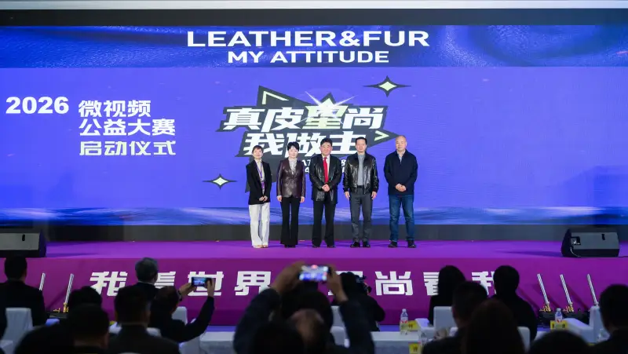

On March 18, 2026, the launch ceremony of the 2026 Real Leather Star Fashion, My Call Micro-Video Charity Contest was held at the Haining Convention and Exhibition Center. It is the first contest in China's leather and fur industry to take real leather and natural fur as its subject. It blends leather and fur with digital media as a cross-industry event. The contest is co-hosted by the China Leather Association, Rayli Magazine, and Xingye Leather Technology Co., Ltd. It is co-organized by the International Fur Federation, Hongxing Automotive Leather (Fujian) Development Co., Ltd., and the Hebei Leather Industry Technology Innovation Strategic Alliance.
At the launch, Li Yuzhong, member of the standing committee and vice president of the China National Light Industry Council and chairman of the China Leather Association, Teng Mingya, deputy party secretary and mayor of Haining, Huang Zheng, party secretary and chairman of Haining China Leather City Co., Ltd., Wang Jing, CEO of the International Fur Federation in China, and Gao Shang, secretary-general of the Hebei Leather Industry Technology Innovation Strategic Alliance, lit the launch screen together. This officially opened the 2026 Real Leather Star Fashion, My Call Micro-Video Charity Contest.
Keep pace with the changing times and achieve "cross-circle" reach
"In the digital economy, we must try many ways to promote real leather and natural fur, and change as people's lifestyles change. Micro-video is now a key way people connect, communicate, and enjoy themselves. It is loved and easy to spread. People gain more knowledge and information through micro-video, so it has become a necessary part of our lives. Through this medium that people know well, the Real Leather Star Fashion, My Call Micro-Video Charity Contest gives leather culture a cross-circle reach. It keeps pace with the times and matters for the growth of the industry," said Li Yuzhong, who fully affirmed the value of the contest.
Since the first contest in 2022, it has run for four editions. With its unique cross-industry view and rich creative forms, it has drawn attention from all sides. The contest aims to spread the natural, eco-friendly, comfortable, fashionable, and durable qualities of leather and fur. It strives to "tell the story of leather and fur well," and builds a bridge between the industry and consumers with a fresh visual language.
Embrace new technology such as AI to open up new ways to create
Innovation, change, openness, and inclusion are a core of the contest, and the key to its growing influence. Since early last year, the organizers sensed that advancing AI could bring a burst of creativity. So they embraced the AI wave and invited creators to use AI in their work. This ignited public passion and participation, raised creative efficiency, and opened new ways to create. It revives history and builds sci-fi scenes, giving the traditional leather story a highly futuristic "cyber" voice.
Worth noting, this year the contest not only embraces new technology such as AI, but also stresses red culture. It invites entrants to use micro-video to find where red culture meets the leather industry, to tell red stories tied to the industry and carry on the red legacy. This enriches the meaning of the contest.
Tell the leather and fur story well, and build a platform with strong emotional value
So far, the contest works have been viewed over 8 million times across Douyin, Bilibili, and other video platforms. On Douyin alone, the views passed 3.1 million. Search "Real Leather Star Fashion" on Douyin, and you already see many works with thousands or tens of thousands of likes. The comments from viewers show their true feelings and love for real leather and natural products. The contest has thus become a landmark brand project for the leather industry, and a platform of strong emotional value for the bond between the industry and consumers.
The organizers say entries are now open. The call runs for more than two months until May 10. The contest sets 19 awards each for the student group and the open group, with total prizes over 80,000 yuan. The results will be announced on July 2. Talented creators and enthusiasts from all fields are warmly invited. Visit the home page of China Leather Network for full entry details. You may also read the contest brief and get the entry form at https://mp.weixin.qq.com/s/1PpfZUUVCcMHok4x-tl18Q.
We look forward to more creators using light as their brush and moments as their ink, to sketch the full beauty of real leather and natural fur. Where lens and light meet, let us watch together how the charm of leather and natural fur, driven by creativity, becomes a visual feast of beauty and heritage.